Before you start
This guide shows how to use the VS Code debugger in the PrairieLearn workspace, the same
environment you use in the lab exams. It is written for people who have used
gdb but not a visual debugger: every step says what the gdb equivalent is.
The example is the Lab Exam Practice Part 1: echo_client.py, which
takes command-line arguments, and echo_server.py.
echo_client.py. Try the practice exam yourself first, then come back here.
If you know gdb
Everything you did in gdb has a button, a panel, or a key in VS Code:
| gdb | VS Code | Key |
|---|---|---|
break 19 | Click just left of the line number 19 (a red dot appears) | F9 |
run 127.0.0.1 5000 "hello world" | Run and Debug → Python Debugger → Python File with Arguments, then type the arguments | F5 |
next | Step Over | F10 |
step | Step Into | F11 |
finish | Step Out | Shift+F11 |
continue | Continue | F5 |
print port, info locals | Variables panel, hover over a variable, or type it in the Debug Console | |
display len(buf) | Watch panel | |
backtrace | Call Stack panel | |
| Ctrl+C (interrupt) | Pause, but it can't stop a program blocked in recv() (see below) | F6 |
kill / quit | Stop | Shift+F5 |
1. Start the server in a terminal
A client needs a server to talk to. Open a terminal (Terminal → New Terminal) and start the server as usual. Leave it running: the debugger will run your client in a separate terminal.
cd part1
python3 echo_server.py2. Set a breakpoint
Open echo_client.py and click in the empty space just left of line number 19.
A red dot appears: that's a breakpoint (gdb: break 19). Click it again to remove it.
Then open the Run and Debug view: the play-button-with-a-bug icon in the bar on the far left. Your breakpoints are listed at the bottom.
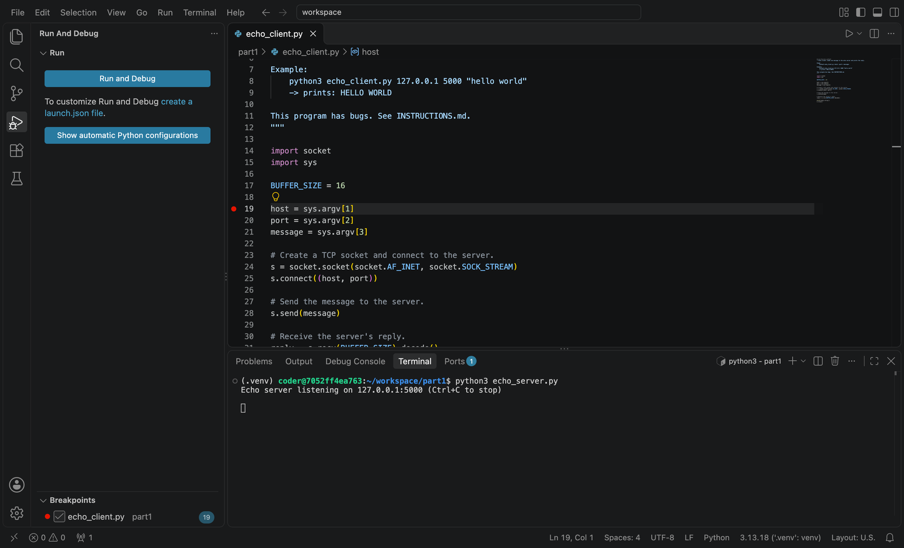
3. Run it with command-line arguments
echo_client.py first, not INSTRUCTIONS.md.
- Click Run and Debug.
- Pick Python Debugger.
- Pick Python File with Arguments. (Plain Python File runs it with no arguments, so
sys.argv[1]would crash.)
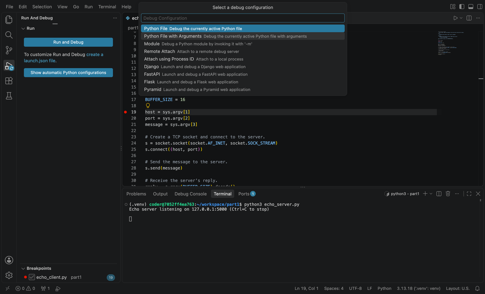
Type the arguments exactly as you would after python3 echo_client.py in a terminal,
quotes included, and press Enter. This is gdb's run 127.0.0.1 5000 "hello world".
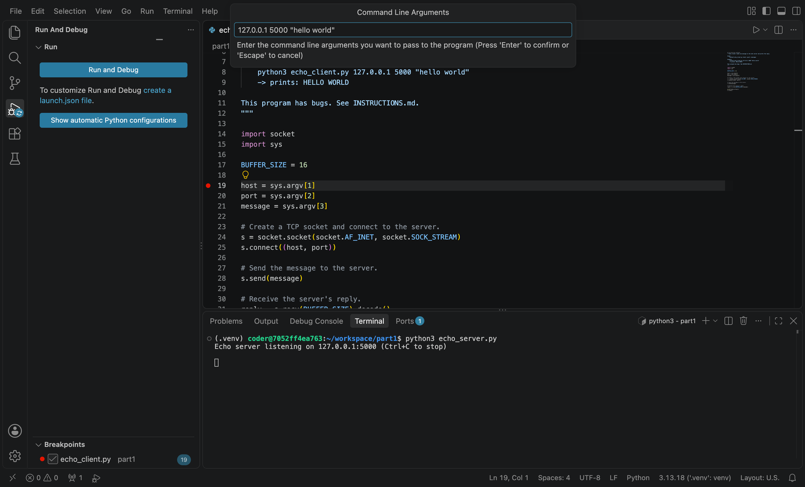
4. The debugger screen
The program stops at the breakpoint and the screen changes (click any screenshot to see it full size):
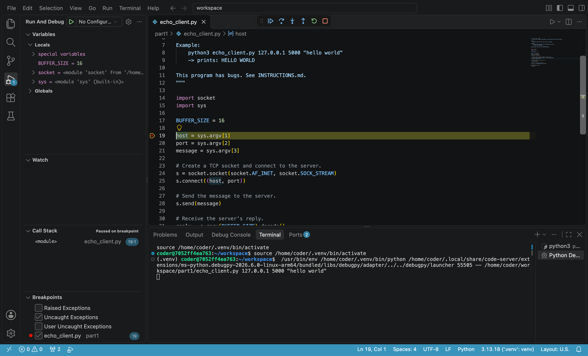
-
The yellow line is the line that will run next; it has not run yet. Same as the
line gdb prints when it stops. Here
hostdoesn't exist yet. - Variables (top left): every local variable and its current value (gdb:
info locals). - Watch: expressions you want to keep an eye on (gdb:
display). - Call Stack: which function called which (gdb:
backtrace).<module>means top-level code, outside any function. - Breakpoints: all your breakpoints, plus checkboxes for stopping on exceptions.
- Terminal (bottom): a new Python Debug Console terminal runs your program. Its output and errors appear here. Your server is still running in the other terminal (switch with the list on the right of the terminal panel).
The debug toolbar floats at the top of the editor:
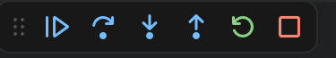
From left to right: Continue (continue), Step Over (next),
Step Into (step), Step Out (finish),
Restart, and Stop (kill). While the program is running,
Continue turns into Pause.
5. Step through and inspect variables
Press Step Over three times. Each press runs one line, and the Variables panel updates as variables are created:
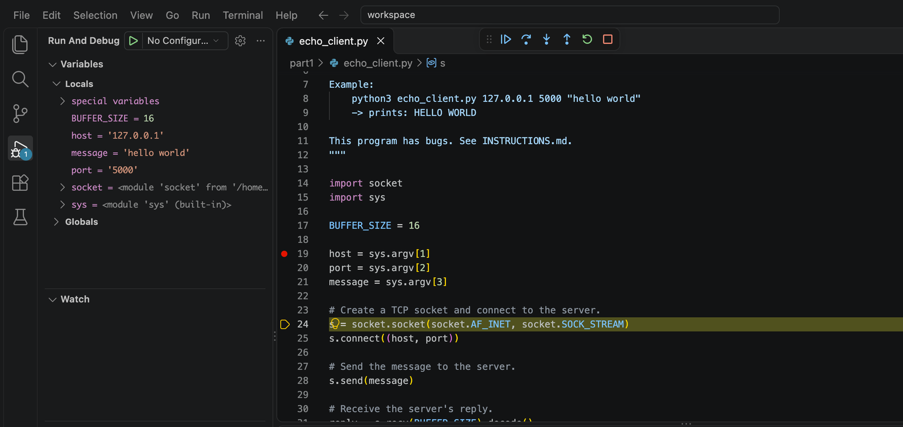
port = '5000'.
Look closely at port: it shows '5000' with quotes, so it is a
string, not the number 5000. Everything in sys.argv is a string.
You can also hover your mouse over any variable in the code to see its value.
6. When the program crashes
Press Continue. Instead of just printing a traceback and exiting, the debugger stops on the line that raised the exception, with all the variables still there to inspect. (This is the Uncaught Exceptions checkbox in the Breakpoints panel, on by default.)
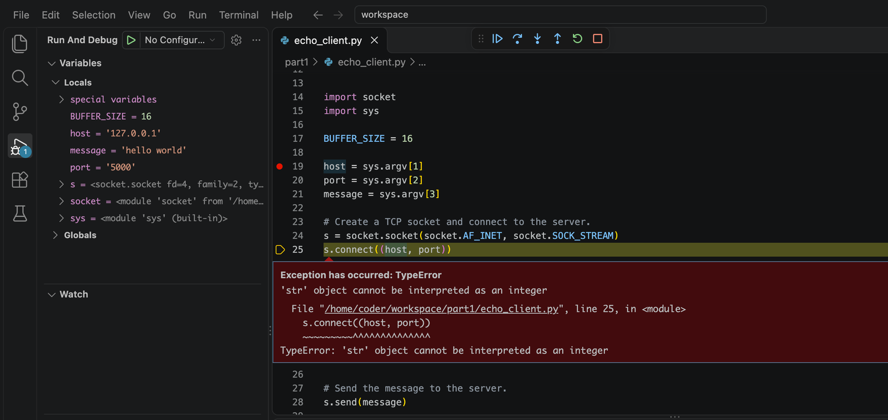
s.connect() needs the port as an int.Press Stop, fix the code, and run it again (F5). The debugger always runs the file as it is saved right now, so there's nothing to recompile.
7. The Debug Console: run any expression
While paused, click the Debug Console tab at the bottom and type any Python expression.
It runs in the paused program, with its variables (gdb: print type(port), but any Python works,
including function calls).
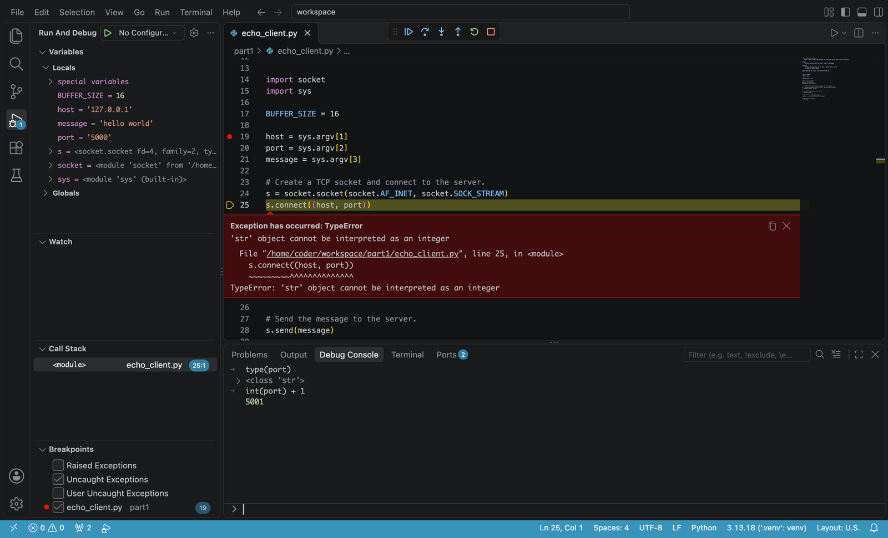
This is a quick way to try a fix (like int(port)) or to check what a value really
is (repr(data) shows hidden characters like \r and \n).
8. When the program hangs
With the port fixed (and message.encode() in send), the client no longer crashes,
but it never finishes either. In gdb you would press Ctrl+C to see where it is stuck.
recv() (or
accept(), or input()). The Python debugger can only stop between Python lines,
and a blocked recv() never returns to Python. The Call Stack just keeps saying
Running.
Instead, put a breakpoint on the line before and the line after the call you suspect.
Here: line 31 (the recv()) and line 33 (the line after it). Run again:
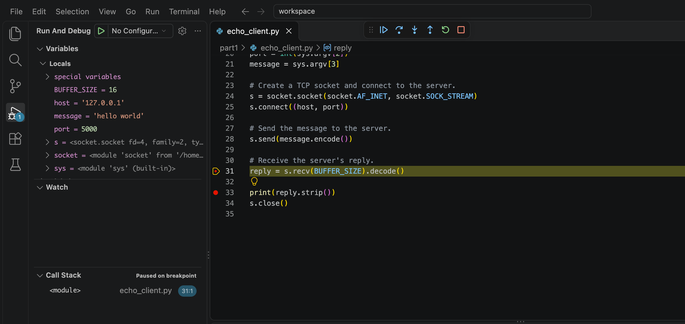
It stops on line 31. Press Continue, and it never reaches line 33:
the program is stuck in recv(), waiting for the server to say something. Why isn't the
server replying? Look at the server's terminal:
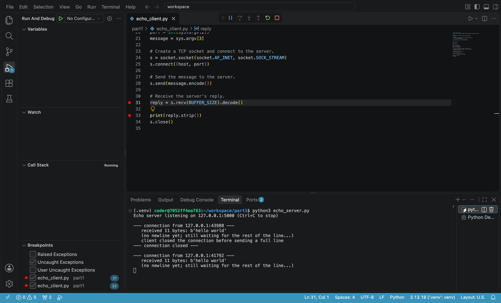
Both sides are waiting for each other. The server is still waiting for the end of the line that the protocol says the client must send. This is the most common bug in networking code, and a debugger alone can't find it: you have to look at both sides of the connection.
Debugging a server
You can run the server under the debugger instead, and use a normal terminal for the client. This is how you would debug Jewel in Project 2.
-
Open
echo_server.pyand set a breakpoint afterrecv(): line 31,buf += chunk. -
Run and Debug → Python File with Arguments, with the port as the
argument:
5001. (Port 5000 is still taken by the server in your first terminal. Two programs can't listen on the same port.) -
Open another terminal (the + in the terminal panel) and run the client against it:
Terminal
cd part1 python3 echo_client.py 127.0.0.1 5001 "hello world"
The server stops at the breakpoint as soon as the client's bytes arrive. Click the + on the
Watch panel to add expressions that are re-evaluated every time the program stops
(gdb: display):
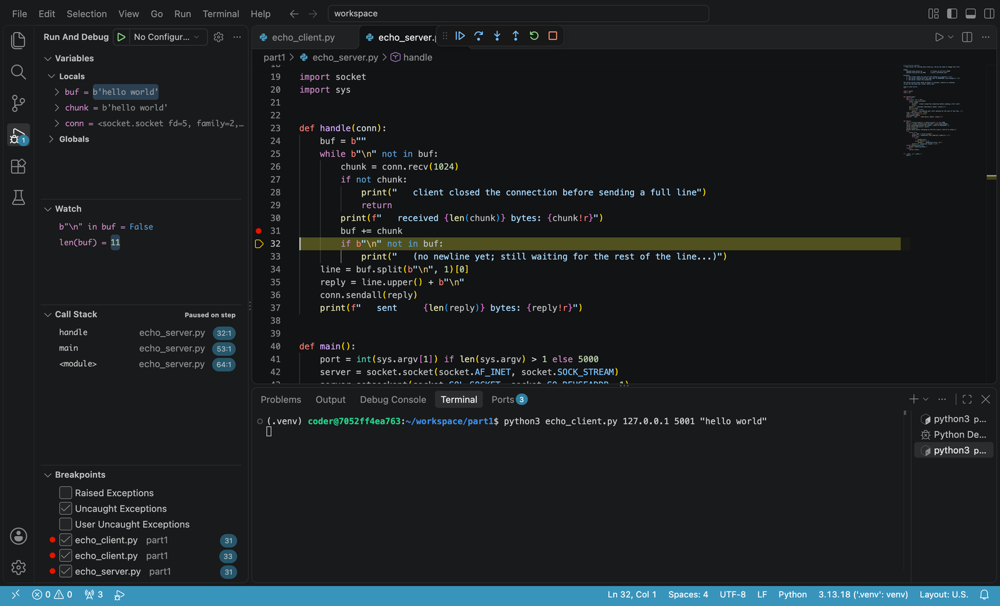
b'hello world', and no \n.
Bytes are shown exactly as received, so a missing \n or \r\n is easy to spot.
The Call Stack now shows handle ← main ←
<module>: click a row to see that function's variables, like gdb's frame.
Files, paths, and stdin
The debugger runs your program from the workspace folder, not from the folder the file is in. So any relative path in the arguments needs the folder in front:
| In a terminal, inside part1/ | In the arguments prompt |
|---|---|
python3 jewel.py 9000 www | 9000 part1/www |
python3 smtp_send.py 127.0.0.1 2500 alice@ucsb.edu bob@ucsb.edu "Meeting" < body.txt | 127.0.0.1 2500 alice@ucsb.edu bob@ucsb.edu "Meeting" < part1/body.txt |
As the second row shows, input redirection with < works in the arguments prompt too: the
program's sys.stdin reads from the file.
Prefer a terminal? Python has its own gdb: pdb
If you'd rather stay in the terminal, pdb works almost exactly like gdb:
python3 -m pdb echo_client.py 127.0.0.1 5000 "hello world"
(Pdb) b 25 # break at line 25
(Pdb) c # continue
(Pdb) p port # print
(Pdb) n # next
(Pdb) s # step
(Pdb) bt # backtrace (called "where" in pdb)
(Pdb) q # quit
It starts paused on the first line, so type c to run to your first breakpoint. Note that pdb reads
its commands from stdin, so it can't be combined with < body.txt; use VS Code for those programs.
Tips
- A crash? Read the traceback first: it gives you the line number. Run under the debugger to see the variables on that line.
- A hang? Find out which side is waiting, and for what. Check the other side's terminal, then use breakpoints around
recv(). - Wrong output? Breakpoint right after the
recv()or just before thesendall()and look at the exact bytes. print()is fine too. For a quick look,print(repr(data))is often faster than a breakpoint. Use the debugger when you need to look at many values, or don't know where to look yet.- "Address already in use" means another copy of your server is still running, maybe an old debug session. Stop it (the Stop button, or Ctrl+C in its terminal) or use a different port.